Fome no mundo compromete objetivos da ONU para 2030
[...]Conhecida pela sigla FAO, correspondente à sua denominação em inglês, a Organização das Nações Unidas para a Alimentação e a Agricultura divulgou[...] a edição mais recente [de 2023] do relatório sobre o Estado da Segurança Alimentar e Nutrição no Mundo. Elaborado pela FAO em conjunto com outros organismos do sistema da Organização das Nações Unidas, a ONU, entre eles a Organização Mundial da Saúde, o relatório é alarmante.
Ele indica, com toda clareza, que alguns dos Objetivos de Desenvolvimento Sustentável – os ODS, fixados pela ONU para 2030 – não serão mais alcançados. São os objetivos listados no ODS número 2, que determinam para a comunidade internacional a obrigação de acabar com a fome e com todas as formas de desnutrição até 2030.[...]
[...]Atualmente, mais de 700 milhões de pessoas passam fome em todo o mundo, o que equivale a quase 10% da população do planeta. E esse número, que deveria estar caindo por conta da meta de “fome zero” fixada para 2030, aumentou significativamente nos últimos anos. São 120 milhões a mais, em comparação com 2019, antes da pandemia de covid-19. Já o quadro mais geral de insegurança alimentar atinge quase 2,5 bilhões de pessoas, praticamente um terço dos habitantes da Terra.
[...]a FAO alertou para o fato de que, desde a edição de 2017, o relatório vem repetidamente chamando a atenção para fatores que estão inviabilizando os objetivos do ODS número 2, de eliminação da fome e da desnutrição. De um lado, a intensificação e a inter-relação de conflitos armados, situações climáticas extremas e crises econômicas. De outro lado, a crescente desigualdade social, com a consequente falta de maior acesso a alimentos nutritivos.
As informações relacionadas ao Brasil são igualmente preocupantes. De um total de cerca de 210 milhões de habitantes, a situação de fome absoluta atinge 10 milhões em nosso país, segundo o relatório; e a insegurança alimentar, um total de 70 milhões. Apesar de um quadro de relativa estabilidade entre os dados de 2021 e 2022, no Brasil e no mundo, é um número extremamente elevado de pessoas em condições alimentares muito precárias.
DALLARI, P. Fome no mundo compromete objetivos da ONU para 2030. Jornal da USP, São Paulo, 26 jul. 2023. Disponível em:
https://jornal.usp.br/radio-usp/fome-no-mundo-compromete-objetivos-da-onu-para-2030/. Acesso em: 10 jul. 2024.
Você pode se perguntar: se este capítulo tratará do tema capitalismo,
por que ele se inicia por um texto sobre a fome no mundo? Como você
perceberá ao longo do percurso, a temática da fome se relaciona de
forma profunda com a maneira como as sociedades estão organizadas,
evidenciando-se especialmente nas sociedades capitalistas. Assim,
vamos destacar, neste capítulo, alguns aspectos e características do
capitalismo, uma forma de organização social, política e econômica
que, neste século XXI, apesar das suas diferenças regionais e locais,
domina praticamente todo o nosso planeta.
Voluntários de organização que atua no combate à fome servem refeições para
população em vulnerabilidade social. Houston, Estados Unidos, 2024.
Origens do capitalismo
A humanidade, ao longo da história, estabeleceu formas diferentes de produzir os bens necessários à sua sobrevivência. Uma dessas formas de organização, vigente na grande maioria das sociedades atuais, inclusive no Brasil, é chamada de **capitalismo**.
Como se viajássemos em uma máquina do tempo, vamos estacioná-la na Europa, durante a Idade Média, entre os séculos IV e XIV (do ano 301 até, aproximadamente, o ano 1400). A forma de organização da sociedade, então, era conhecida como **feudalismo**.
Uma das características da sociedade feudal era uma estrutura social fixada, sem chances de mudança, de acordo com o mundo regido pela Igreja Católica. Se uma pessoa nascesse em uma família pertencente à nobreza teria o que popularmente se chama de “sangue azul”, sendo herdeira das terras em torno do castelo e escolhida por Deus como destinatária de toda a riqueza produzida, dos impostos e das taxas pagos pelos que necessitassem atravessar as terras do feudo. Mas, se nascesse servo, seria um plebeu, nada mais lhe restando do que trabalhar, resignadamente, para seu senhor durante toda a vida, tornando-se um merecedor do reino de Deus quando viesse a falecer. Esse mundo, organizado assim, não podia ser questionado nem consequentemente ser mais transformado.
Grandes mudanças, porém, começaram a ocorrer em toda a Europa, principalmente a partir do século XIV, para além da vontade daqueles que detinham o poder e a riqueza. Foram mudanças que ocorreram lentamente, de forma gradativa, praticamente imperceptíveis para quem vivia à época.
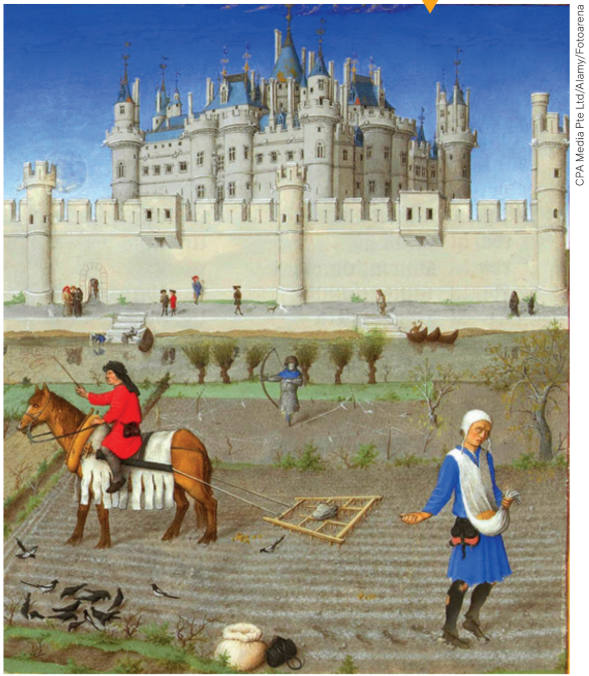
Entre as diversas transformações, podemos destacar o aumento do número de membros dos grupos sociais: comerciantes, artesãos e camponeses livres. Estes últimos surgiram a partir da cessão de terras consideradas inférteis ou improdutivas, principalmente em regiões pantanosas, a grupos de servos, mediante pagamento de taxas e estabelecimento de outros compromissos de obediência. Deve-se registrar que, na Europa do século XII, segundo o economista estadunidense Leo Huberman (1903-1968), eram cultiváveis apenas a metade das terras francesas, um terço da atual Alemanha e um quinto da Inglaterra.
Ilustração presente
na obra As horas
muito ricas do
Duque de Berry,
dos irmãos
Limbourg, autoria
desconhecida,
c. 1440.
Já o grupo social composto dos comerciantes havia surgido nos entroncamentos
das diversas rotas comerciais existentes na Europa, que formavam grandes
feiras, onde eram negociados os valiosos produtos originários do Oriente,
com destaque para as chamadas especiarias.
Essas feiras acabaram se transformando em verdadeiras cidades fortificadas,
inicialmente chamadas de burgos – daí o nome burgueses, pelo qual aqueles comerciantes passaram a ser conhecidos.
Como destacamos anteriormente, a forma de organização social existente na Europa era o feudalismo. Os novos grupos sociais não se ajustavam ao antigo sistema social, político e econômico. Os camponeses livres, apesar de minoritários, haviam se colocado à margem da servidão feudal, e os artesãos, por sua vez, trabalhavam por conta própria nas cidades, aproveitando-se também do renascimento comercial.
Quanto aos burgueses, deve-se destacar que seu rápido enriquecimento acabou por gerar mudanças profundas naquela velha ordem, em que não havia lugar e reconhecimento para essa nova classe social. As mudanças abrangiam desde contestações à filosofia da Igreja Católica, que considerava pecado a obtenção de lucros, os juros e a usura – aspectos de um conjunto de mudanças que resultou na **Reforma Protestante** –, como também contestações ao poder acumulado pela nobreza feudal.
Nesse caso, a burguesia ascendente tratou de reforçar e centralizar o poder na pessoa do
rei, em uma aliança que fez nascer as chamadas monarquias nacionais e que possibilitou as
Grandes Navegações, capitaneadas por Portugal e Espanha. Assim, no meio da ordem feudal,
estava sendo gestado, aos poucos, um novo sistema social e econômico, o capitalismo. Com o
tempo, desmoronava-se a velha sociedade estamental, como viria depois a ocorrer definitiva-
mente com as revoluções inglesas do século XVII e a Revolução Francesa de 1789.
Acumulando capital e revolucionando a indústria
O capitalismo se tornou a organização social, política e econômica dominante
a partir da Revolução Industrial, iniciada na Inglaterra no século XVIII.
Entretanto, para vigorar dessa forma, era necessária uma fase anterior de
“acumulação de capital”. Vamos entender isso melhor.
Atualmente, para alguém iniciar um negócio, uma empresa, é necessário obter
capital; isso também ocorria com os burgueses da época. Karl Marx
(1818-1883), um dos principais estudiosos do capitalismo, analisou o que
ocorreu na Inglaterra em seu período pré-capitalista.
Ele demonstrou que houve uma transformação radical das relações de produção
até então existentes no campo.
A transição do sistema feudal para o capitalista ocorreu por meio da apropriação da
terra pela burguesia, com a expulsão dos camponeses que lá viviam. Marx denominou esse
processo acumulação primitiva de capital.
Foi exatamente isso o que ocorreu: os camponeses foram expropriados, separados das
terras que cultivavam, restando-lhes apenas a venda da sua força de trabalho em troca de um
salário. Foram esses trabalhadores que serviram de mão de obra para as indústrias que
surgiam e que passaram a ser empregados como assalariados nas terras que antes cultivavam no
sistema de trocas servil.
Você talvez pergunte se em toda a Europa o capitalismo surgiu da mesma forma. A
Inglaterra foi o caso analisado por Karl Marx. Mas, e depois, como aconteceu a expansão do
capitalismo? Podemos responder que, de fato, as mudanças ocorreram de formas
diferenciadas, em tempos distintos, de acordo com uma série de variáveis. Muitos cientistas sociais
e historiadores que pesquisam o tema, por exemplo, chamam atenção para o papel decisivo
desempenhado nas cidades europeias pelo comércio, pelas trocas de mercadorias. De
qualquer forma – considerando como elemento principal do processo de acumulação primitiva
de capital –, por meio da análise de Marx a respeito da expropriação da terra, podemos dizer
que o capital prosseguiu em seu processo de acumulação com a multiplicação dos centros
comerciais existentes nas cidades (os burgos). Além disso, de forma extremamente relevante
e mais decisiva, prosseguiu com a expansão do chamado capital mercantil, com a apropriação
da riqueza existente em terras de outras partes do mundo, durante o período das Grandes
Navegações e com o avanço da colonização.
Assim, o processo de acumulação de capital foi se desenvolvendo por meio do
financiamento de corsários e piratas, do tráfico de escravizados (principalmente africanos), do
empréstimo de dinheiro a juros por intermédio da organização de instituições bancárias, do
pagamento de salários miseráveis aos artesãos empregados nas manufaturas e, não menos
importante, vencendo guerras, comerciando e impondo tratados a outros países.
Depois da indústria, o comércio passou a ser a atividade mais importante da burguesia
inglesa – como forma de transportar e comercializar seus produtos industriais. Os comerciantes
ingleses e seus navios estavam por toda a parte do mundo. Quanto maior a atividade
comercial, maior era a concorrência. Cada mercador inglês queria abater seus concorrentes e, para
vencer, era preciso oferecer produtos mais baratos. Apresentou-se, então, um questionamento
entre os mercadores: como baixar cada vez mais os custos da produção?
A resposta estava no uso de máquinas. Desse modo, foi a pressão do mercado que levou a
burguesia inglesa a aprimorar suas máquinas e a instalar mais indústrias.
Mas o capital depende do trabalho; ou seja, a burguesia necessitava de operários para
instalar suas indústrias e fazê-las operar. Para encontrá-los, era necessário ir ao campo, onde
estava a mão de obra.
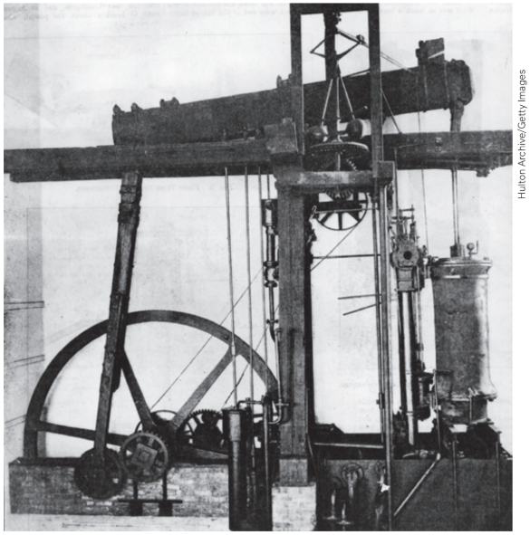
No século XIX, a Revolução Industrial alcançou
outros países europeus, como França, Alemanha,
Itália (na parte norte) e Rússia. Nos Estados Unidos,
as primeiras indústrias foram instaladas no
final do século XVIII, mas seu desenvolvimento se
deu na segunda metade do século XIX.
A Revolução Industrial trouxe seu
símbolo máximo: a máquina a vapor. Era o sinal dos
novos tempos: barcos, trens, ferros de passar
roupa e banhos a vapor. Começou, então, a produção
em massa, e o desejo do lucro tornou-se
um ideal a ser seguido. As pequenas oficinas
tornaram-se grandes fábricas, apareceram as
chaminés, construíram-se pontes, túneis, minas.
Máquina a vapor, de James Watt,
patenteada em 1781, c. 1899.
O desenvolvimento industrial arruinou os artesãos, já que os sapatos e os tecidos eram confeccionados mais rapidamente e de maneira mais barata em uma fábrica do que nas oficinas dos artesãos, sapateiros ou tecelões. Bem como os camponeses destituídos de suas terras, os artesãos também tiveram de buscar emprego de operários nas fábricas. Havia, então, uma multidão que não conseguia mais viver por conta própria, destinada a trabalhar para um patrão em troca de um salário. Formou-se, assim, uma nova classe social chamada proletariado.
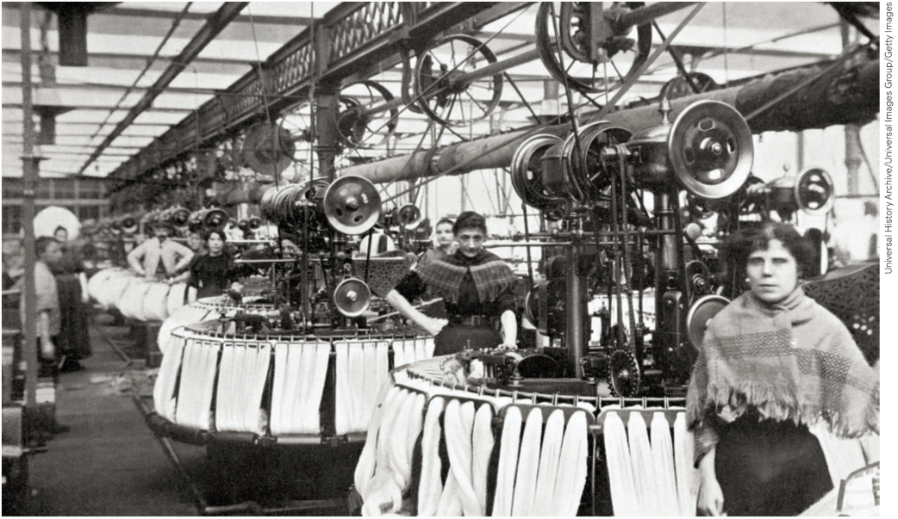
Trabalhadores
em fábrica
inglesa. Bradford,
Inglaterra, final do
século XIX.
Desse modo, o capitalismo trouxe grandes transformações para a humanidade. Como Karl
Marx e Friedrich Engels (1820-1895) diziam, em 1848: “tudo que era sólido se desmanchava no
ar”. As grandes potências mundiais da época eram todas capitalistas. Fábricas, terras, matérias-
primas, comércio, bancos, máquinas, tudo pertencia aos capitalistas, que manipulavam o capital
com um único objetivo: obter lucro e ganhar dinheiro.
Novos ideais políticos e econômicos: o liberalismo
O que caracteriza socialmente e economicamente a sociedade capitalista são as relações
assalariadas de produção (trabalho assalariado). Tais relações se baseiam na propriedade privada das
fábricas, terras, bancos, minas de carvão e grandes transportadoras comerciais.
São essas relações que constituem os meios pelos quais a riqueza da sociedade é
produzida; por esse motivo, são chamados de meios de produção. Recebem também a
denominação de capital, termo que, no senso comum, é associado à posse de recursos monetários, ao
dinheiro. Na verdade, todos os meios de produção de riqueza, ou de valor monetário, como
fábricas e minas de carvão, são capitais, pelo valor que esses bens têm investidos e são
capazes de produzir.
O trabalhador não é obrigado a ficar sempre na mesma terra ou fábrica; ele é livre para se
empregar na propriedade do capitalista que o aceitar. Como não é dono dos meios de
produção, é obrigado a trabalhar para os proprietários do capital.
Segundo Marx, há duas classes principais: a burguesia e os trabalhadores assalariados (ou
proletariado). Se o capitalismo é movido pelo lucro, para aumentar seus lucros os capitalistas
procuram aumentar a produção por meio do aperfeiçoamento técnico, da exigência de maior
produtividade dos operários, de maior racionalização do processo de produção.
Deve-se registrar que a ascensão do poder político e econômico da burguesia, descrita
anteriormente, foi acompanhada pela formulação de um conjunto de ideias que justificaram essa
nova sociedade que estava surgindo nesse processo tão intenso de mudanças.
Na política, o grande marco desse processo de mudanças foi a Revolução Francesa, em
1789, em que foi aprovada a Declaração dos Direitos do Homem e do Cidadão, que afirmava
que “todos eram iguais perante a lei”. A Revolução Francesa consagrou o lema igualdade,
liberdade e fraternidade.
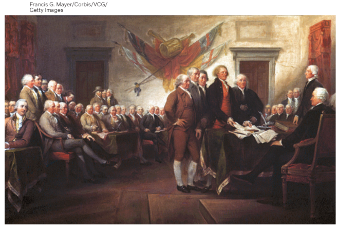
As ideias que culminaram com a Revolução Francesa foram gestadas pela burguesia
europeia ascendente, durante os séculos XVII
e XVIII, como reivindicação fundamental pela
expressão das liberdades políticas e econômicas dos indivíduos contra as arbitrariedades
do Estado absolutista vigente então no continente,
tanto em relação aos entraves determinados pelo poder absoluto dos monarcas
como pelo seu controle total da economia,
em um modelo nomeado como mercantilismo.
John Trumbull.
Declaração de
Independência [...],
1787. Óleo sobre tela,
53 cm x 78,7 cm.
Essa corrente de pensamento de origem
burguesa recebeu o nome genérico de liberalismo,
tendo servido de suporte às revoluções
capitalistas que ocorreram desde então,
assim como à luta pela independência dos Estados
Unidos, representada na imagem.
No caso do liberalismo político, o combate contra o poder da monarquia e da Igreja
reuniu pensadores considerados “clássicos”, como é o caso, por exemplo, do inglês John Locke
(1632-1704) e do francês Charles de Montesquieu (1689-1775).
Locke defendia que a organização política deveria ter a preocupação de preservar a
liberdade individual dentro do quadro dos direitos naturais: vida, liberdade, propriedade – e suas
consequências, como liberdade de pensamento, religiosa e de revolta –, tendo como limite
sempre alguma ameaça à liberdade de outro indivíduo. Montesquieu, por sua vez,
preocupou-se em propor uma teoria de divisão dos poderes que teria como objetivo a busca do equilíbrio
na sociedade, evitando-se quaisquer tipos de arbitrariedades (retomaremos essa temática em
outro capítulo, quando estudarmos as teorias sobre o Estado Moderno).
Apesar de definirmos essa corrente teórica como liberalismo político, esses pensadores
não dissociavam essas questões da organização econômica, principalmente do direito à
propriedade, apresentado por Locke como um direito natural dos seres humanos.
E de que modo se daria a relação entre a política e a economia, segundo esses pontos
de vista? Como contraposição ao mercantilismo como uma política de intervenção direta
do Estado na atividade econômica, outros defensores desses princípios, como Adam
Smith (1723-1790) e David Ricardo (1772-1823), diziam que as principais funções do governo
deveriam ser limitadas a somente três: proteger a propriedade, não interferir no lucro e
preservar a paz. Por essa razão, o conjunto de teorias formuladas por esses economistas
ficaram conhecidas como liberalismo econômico.
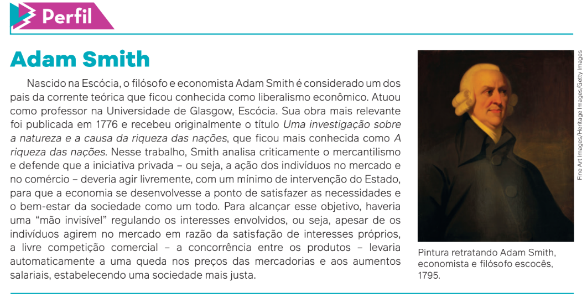
Concorrência e monopólio
Desde a Revolução Industrial, como vimos, os capitalistas continuavam procurando expandir
seus negócios e ampliar os lucros. Com as revoluções que ocorreram em vários países da
Europa e nos Estados Unidos, o sistema capitalista prosperava cada vez mais.
Em meados do século XIX, as indústrias iniciaram uma fase de grande concorrência e, para
disputar os mercados, começaram a diminuir os preços. Essa concorrência se transformou em
uma “prova de resistência” para diversos capitalistas.
Para abaixar os preços, era necessário aumentar a produção e colocá-la no mercado. Com
isso, procurou-se ampliar o mercado. E, para não falir, os pequenos capitalistas precisavam
continuar produzindo como os grandes; mas, para produzir, precisavam de dinheiro. Como o
dinheiro estava nos bancos, que se aliavam aos grandes capitalistas, muitos pequenos
empresários acabaram falindo.
Na lógica capitalista, portanto, sobreviviam somente os “mais fortes”. As companhias de
ferro, carvão, entre outras, ligadas aos bancos, estabeleciam o monopólio; ou seja, definiam o
grupo de empresas que dominaria o mercado, controlando a quantidade de bens à disposição
dos consumidores e, sem concorrência, estabelecendo os preços. Instalado a partir do final do
século XIX, o capitalismo monopolista resiste até hoje, sendo chamado também de capitalismo financeiro.
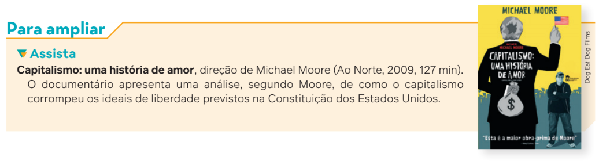
A crise: superprodução de mercadorias e imperialismo
A situação das economias capitalistas se tornou dramática no século XIX, pois o mercado
ficou “inundado” de mercadorias. Esse processo foi nomeado pelos economistas como uma
“crise de superprodução”, ou seja, muitas mercadorias e poucos consumidores, resultando em
uma crise econômica.
Para Karl Marx, o capitalismo era irracional. Ele tentou provar que a concorrência entre
empresas acabaria mergulhando a economia capitalista em um terrível caos, que incluiria, de
tempos em tempos, grandes crises econômicas, com falências, desemprego, aumento da
miséria e da violência. O capitalismo se tornaria cada vez mais ineficiente, desperdiçando
recursos, causando miséria e insegurança; pois se, por um lado, com a crise de superprodução, as
indústrias demitiam operários para baixar custos e prejuízos, por outro, piorava mais a situação
dos operários, que, na prática, eram os consumidores das mercadorias.
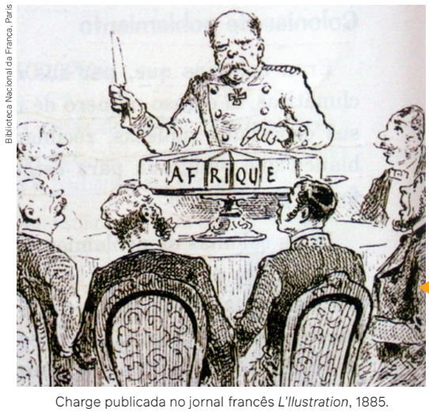
No final do século XIX, representantes do capital, preocupados com a falta de mercado
nos seus próprios países, partiram para novos espaços geográficos a fim de tentar resolver
a crise. Encontraram como uma das soluções a **colonização
da África e da Ásia**. As empresas capitalistas e as nações europeias
fizeram a partilha do continente africano em colônias
para expandir seus mercados e obter mão de obra e matéria-prima
baratas. Dessa época até hoje, a história de muitos
países latino-americanos, africanos e asiáticos é a de submissão
aos interesses do capitalismo monopolista da Europa e
dos Estados Unidos. Essa situação de submissão política
e econômica, provocada pelos interesses capitalistas, passou
a ser conhecida desde então como imperialismo.
A ilustração faz referência à partilha da África durante o neocolonialismo do século XIX, deliberada durante a Conferência de Berlim, ocorrida entre novembro de 1884 e fevereiro de 1885. O evento delimitou regras e acordos durante a ocupação do continente africano pelas empresas capitalistas e as nações europeias, para que os conflitos não impedissem o fluxo do comércio.
Segundo o político socialista e teórico russo Vladimir Lênin (1870-1924), o **imperialismo**
é o capitalismo na sua maturidade. O capitalismo monopolista estende ao resto do
mundo seu domínio econômico e, por consequência, militar.
Para exemplificar o alcance desse poder, veja o que dizia o general Smedley Butler
(1881-1940), que passou 33 anos e quatro meses no Corpo de Fuzileiros Navais como
agente de segurança do capital estadunidense, no período entre o final do século XIX e
as primeiras décadas do século XX.
Desde segundo-tenente até general, passei a maior parte do tempo servindo de
guarda-costas para Wall Street e seus banqueiros.
Assim, ajudei a transformar o México num lugar seguro para os interesses
petrolíferos americanos em 1914.
Ajudei a fazer de Cuba e Haiti lugares decentes para que os rapazes do City Bank
pudessem recolher seus lucros em paz.
Ajudei a purificar a Nicarágua para que os irmãos Brown pudessem instalar seus
bancos, entre 1909 e 1912. Limpei o terreno na República Dominicana para os interesses
açucareiros norte-americanos, em 1916.
Na China, em 1917, colaborei para que a Standard Oil fizesse seu trabalho. Eu tinha,
como diriam os rapazes do gatilho, uma boa quadrilha.
Fui recompensado com honrarias e promoções. Voltando, agora, os olhos ao passado,
acho que poderia dar umas boas sugestões a Al Capone.
BUTLER, S. In: NOVAES, C. E.; RODRIGUES, V. Capitalismo para principiantes. São Paulo: Ática, 2008. p. 108.
Max Weber e o “espírito” do capitalismo
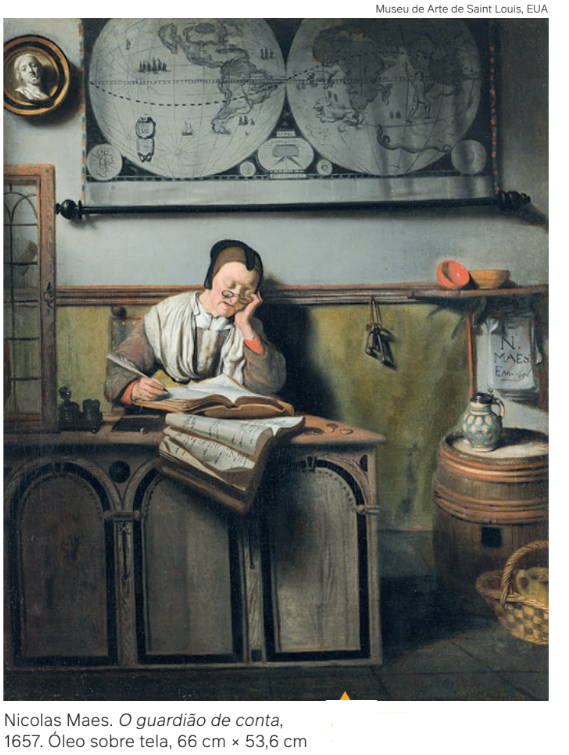
As reflexões que apresentamos até o momento podem
dar a entender que a teoria formulada por Karl Marx é a
única que tem força explicativa sobre o surgimento do
capitalismo e suas principais características. Mas existem
outras correntes teóricas que tiveram essa mesma
finalidade, elaboradas por economistas, historiadores e
filósofos. No entanto, na Sociologia, o também alemão Max
Weber (1864-1920) apresentou uma construção teórica
considerada por muitos pensadores, até os dias de hoje,
como instigante e inovadora, relacionando o surgimento
do capitalismo à Reforma Protestante.
Max Weber, na passagem do século XIX para o século
XX, desenvolveu uma série de estudos intitulados Sociologia da Religião.
Entre esses estudos, foi publicada em
duas partes, em 1904 e 1905, a primeira versão da sua
obra A ética protestante e o “espírito” do capitalismo.
A preocupação central de Weber era examinar os principais
aspectos sociais e econômicos presentes historicamente nas sociedades ocidentais,
o único lugar do mundo
onde, até então, havia florescido e se consolidado a organização
social e econômica capitalista. Um desses aspectos
era tentar entender a relação muito próxima entre
as ideias predominantes em determinado segmento do
protestantismo cristão, o calvinismo, e a influência
qualitativa que elas exerceram para constituir o que ele
denominou “espírito” do capitalismo, então nascente.
O argumento central de Weber tomava como base o
princípio básico da ascese – termo que pode ser entendido
também como abnegação – presente nas práticas
religiosas calvinistas.
O ascetismo reúne um conjunto de práticas religiosas prescritas aos indivíduos com
base em um comportamento disciplinado, rígido e simples, caracterizado também como
puritano, em cumprimento a uma ética moral necessária à realização dos desígnios divinos.
Uma das ideias centrais do calvinismo é o entendimento de que o trabalho é a própria finalidade da vida.
Como explica Weber:
[...] a valorização religiosa do trabalho profissional mundano, sem descanso, continuado,
sistemático, como o meio ascético simplesmente supremo e a um só tempo comprovação
o mais segura e visível da regeneração de um ser humano e da autenticidade de
sua fé, tinha que ser, no fim das contas, a alavanca mais poderosa que se pode imaginar da
expansão dessa concepção de vida que aqui temos chamado de “espírito” do capitalismo.
WEBER, M. A ética protestante e o “espírito” do capitalismo. São Paulo: Companhia das Letras, 2004. p. 156-157.
Na análise de Max Weber, essas visões de mundo cumpriram com o papel de “libertar” ética
e psicologicamente os protestantes para a aquisição de bens e a busca de lucros,
considerando o sucesso eventualmente alcançado nesse sentido como fruto da vontade de Deus.
Assim, a vitória alcançada pela dedicação constante e sistemática ao trabalho – entendido
como vocação – se configurava como um exemplo de afirmação da sua fé religiosa e um caminho
para a salvação. Tal concepção valia tanto para os trabalhadores, em geral, que deveriam
se resignar e cumprir com dignidade as tarefas exigidas pela profissão que exercessem, por
mais miserável que fosse seu salário, quanto para os empresários. Nesse último caso, a
demonstração de fé era devidamente recompensada sob o ponto de vista da aquisição material
e da consequente acumulação de riqueza, entendida como parte da bênção divina alcançada
por aqueles que estariam predestinados, os “eleitos” a alcançar o paraíso na Terra.
O sociólogo brasileiro Maurício Tragtenberg (1929-1998) nos alerta que, de forma alguma,
Max Weber entendia o tal “espírito” do capitalismo como consequência da Reforma
Protestante. O que ele pretendia, de fato, era investigar de que maneira a sociedade capitalista havia
sido influenciada qualitativamente pela religião. É importante registrar também que
metodologicamente ele nunca se dispôs a construir uma explicação “total” sobre a origem dessa
organização social e econômica. Sua tese, porém, é sempre confrontada com o pensamento de Marx,
pois, diferentemente desse outro pensador, em sua abordagem mais centrada na economia,
aponta para aspectos de ordem cultural que estariam presentes na constituição do capitalismo
como fenômeno social.
Enfim, em sua formulação teórica, o capitalismo surge e prossegue com base no
desenvolvimento de fatores culturais, e não econômicos. Segundo Weber, na origem da nova
sociedade que então surgia, a ciência, a tecnologia moderna e a burocracia – com o seu papel de
organizar a administração de um grande número de pessoas – tiveram um impacto ainda mais
fundamental do que a economia capitalista. Esses outros aspectos – ciência, tecnologia e
burocracia – têm em comum, para Weber, a característica que ele nomeava como racionalização,
ou seja, a organização da sociedade e da economia com base na eficiência e no conhecimento
técnico, princípios decisivos desse processo.
Existiria alguma alternativa ao capitalismo?
Desde o século XIX, quase todos os dias vemos nos jornais, nas revistas, nas conversas e,
mais recentemente, nas redes sociais alguma frase ou ideia sobre socialismo e comunismo.
Mas o que é realmente o socialismo? Qual é a diferença entre socialismo e comunismo?
Vimos, anteriormente, que a situação dos trabalhadores no início do desenvolvimento
capitalista na Europa era degradante. Nesse contexto, surgiram contestações à ordem
vigente, críticas ao sistema capitalista e propostas de uma nova organização da sociedade.
Não existiam somente as ideias dominantes do liberalismo e do capitalismo.
Na década de 1830, surgiram pensadores ingleses e franceses que eram chamados de
socialistas. Eles acreditavam que a economia não deveria beneficiar poucos indivíduos (a
burguesia), mas toda a sociedade. Em vez da competição do mercado, propunham a
cooperação. Os socialistas pensavam que as mudanças poderiam ser planejadas e que se
deveria arquitetar uma nova sociedade, mais justa, mais harmônica, mais racional. Os
primeiros a se destacarem nesse debate foram Robert Owen (1771-1858) e Charles Fourier
(1772-1837).
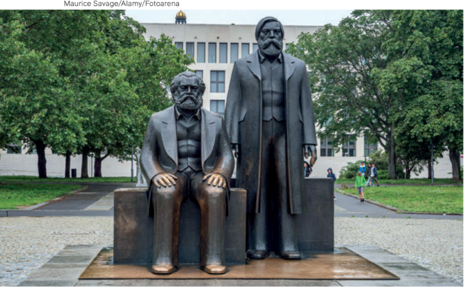
Monumento em homenagem a Marx e Engels. Berlim, Alemanha, 2023.
Os socialistas que mais influenciaram as
gerações de futuros críticos do capitalismo,
porém, foram os pensadores alemães Karl Marx
e Friedrich Engels, fundadores do socialismo
científico, hoje chamado de marxismo. Suas
ideias partiam das seguintes perguntas: por
que existem os problemas sociais? De que
modo é possível superá-los? Ao contrário de
outros pensadores da época, eles acreditavam
que os filósofos se limitaram a interpretar o
mundo de diferentes maneiras; mas o que
importa é transformá-lo.
Marx e Engels achavam que somente o estudo
científico da sociedade poderia responder
a essas questões. Para eles, havia uma única
força social capaz de transformar o mundo: o
proletariado.
Para os fundadores do socialismo científico, o proletariado, por conta própria, tinha força
para construir uma nova sociedade. Em 1848, declararam que a emancipação da classe
trabalhadora é obra da própria classe trabalhadora. Na sua obra mais famosa, O capital, de
1867, Marx demonstrou com dados econômicos que o capitalismo era um sistema injusto e
irracional. Injusto porque só haveria um meio de a burguesia lucrar: explorando a força de trabalho
do proletariado.
Mais-valia e luta de classes
Como se pode perceber, na análise de Marx e Engels, a burguesia e o proletariado, que são
as classes sociais fundamentais do capitalismo, seriam totalmente antagônicos. Isso significa
dizer que a burguesia, que é numericamente uma minoria, somente pode existir em razão da
existência e da submissão da maioria, o proletariado.
No capitalismo, os meios de produção de riqueza estão nas mãos da burguesia. Logo, para
não morrerem de fome, os trabalhadores precisam se submeter a ela. Recebem um salário e,
em troca, sua capacidade de trabalhar fica à disposição de um patrão, que procura explorá-la
ao máximo. Desse modo, o valor do trabalho realizado pelo operário acaba sendo maior do que
o salário que recebe. Mas tudo o que o proletariado produz além do valor do seu salário fica
com o patrão. Essa é a origem de seu lucro. Marx chama essa diferença de mais-valia.
Para Marx, a mais-valia ocorria porque o capitalismo estava baseado na propriedade
privada dos meios de produção.
Para solucionar esse problema,
ele afirmava que o capitalismo
precisava ser destruído a fim de
que os trabalhadores se tornassem
donos de todos os meios de
produção; ou seja, o proletariado
deveria expropriar a burguesia e
fundar uma sociedade socialista.
Nessa nova sociedade, terras,
bancos, minas e fábricas
pertenceriam a todos aqueles que
produzissem e trabalhassem.
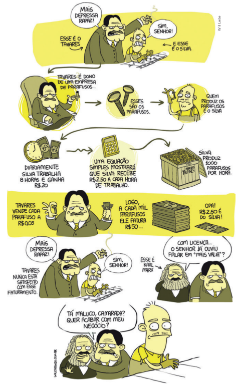
Tudo
seria de todos, e os frutos do
trabalho coletivo seriam distribuídos
de acordo com a produção de
cada um. Dessa forma, ninguém
exploraria ninguém.
Marx e Engels concluem, portanto,
que “a história de todas as
sociedades até hoje existentes é a
história das lutas de classes”. Essa
se tornou uma das frases clássicas
do Manifesto Comunista, redigido
pelos dois em 1848. O antagonismo
entre as classes sociais
encontra a sua maior radicalidade
exatamente no capitalismo –
sistema em que o proletariado não
teria nada a perder, como afirmam
os autores no Manifesto.
Com base nas análises dos
teóricos do socialismo científico,
a partir da segunda metade do
século XIX, surgiram vários
movimentos de trabalhadores que
lutaram contra o sistema capitalista
e promoveram uma série de
revoltas, insurreições e revoluções.
WILL TIRANDO. Mais Valia. In: WILLTIRANDO. [S. l.],
2013. Disponível em: http://www.willtirando.com.br/
mais-valia/. Acesso em: 10 set. 2024.
Revoluções socialistas
No Manifesto Comunista, Marx e Engels afirmavam também que o proletariado precisava
construir seu partido para tomar o poder político e derrubar o capitalismo e a burguesia.
Não podemos, aqui, confundir comunismo e socialismo.
Para Marx, socialismo seria a primeira etapa de construção de uma nova sociedade, em que os operários, depois de derrubarem a burguesia, instalariam um novo Estado, chamao de Estado Operário.
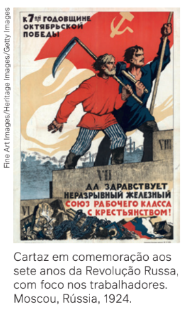
Com o desenvolvimento desse Estado, baseado na ampliação da participação dos
produtores de riqueza nas decisões econômicas e políticas da sociedade, aos poucos,
os indivíduos perceberiam que o Estado não seria mais necessário, evoluindo para o
comunismo, com uma sociedade em que todos deveriam desfrutar das riquezas
produzidas, extinguindo definitivamente as desigualdades e a exploração entre as
pessoas.
Mas é somente em 1917, com a Revolução Russa, que as ideias socialistas tomam
corpo. A Rússia, nos primeiros anos do século XX, era governada pelos czares (os
imperadores), sendo um dos países mais pobres e opressores do mundo. Em
novembro de 1917, operários e camponeses, guiados por Lênin e outros líderes do
Partido Bolchevique, como Liev Trotski (1879-1940) e Josef Stalin (1878-1953), fizeram
uma revolução. Foi a primeira tentativa na história de construir uma sociedade
socialista.
Lênin, o grande líder da Revolução Russa, em 1917, em um de seus mais famosos
livros – O Estado e a revolução –, escreveu que o socialismo só poderia ser
realmente válido com um regime democrático, em que o poder fosse exercido pelos
próprios trabalhadores. Afirmava que o Estado, após a revolução vitoriosa, se
extinguiria paulatinamente, conforme defendia Marx.
A partir de 1922, a revolução socialista iniciada na Rússia se dissemina para as
repúblicas vizinhas, constituindo a União das Repúblicas Socialistas Soviéticas (URSS).

Após a morte de Lênin, em 1924, houve uma disputa de poder entre os dois mais importantes
dirigentes russos, Trotski e Stalin. Trotski defendia a expansão da revolução a outros países,
pois achava que a restrição do socialismo a um único país, com o consequente isolamento da
URSS, levaria, de forma inevitável, ao fracasso do movimento. Essa teoria foi intitulada por ele
como “revolução permanente”. Já Stalin defendia a tese de que a URSS era um país enorme,
cheio de recursos naturais, com uma população grande, e que por isso seria possível construir
o socialismo somente na URSS, para depois expandi-lo a outros países. Essa ideia foi chamada
de “socialismo num só país”.
O fato é que Stalin estava acumulando muitos poderes, e as ideias de Trotski foram
derrotadas. Pouco tempo depois, ele foi obrigado a abandonar o país, em 1927. Stalin, então,
tornou-se o dirigente da URSS e, durante seu governo, milhares de comunistas foram presos e
fuzilados. Ele teve pleno poder até o dia de sua morte, em 1953, exercendo-o como ditador.
Como vimos, de acordo com as teorias de Marx, Engels e Lênin, na sociedade socialista o
Estado se dissolveria aos poucos. Os trabalhadores administrariam as empresas e a economia.
Democraticamente, a própria sociedade se autogovernaria. Lênin acreditava que os sovietes
(comitês de operários, soldados e camponeses) teriam cada vez mais poder para decidir no
lugar do Estado; porém nada disso aconteceu na antiga URSS.
No tempo de Stalin, o Estado passou a dominar
tudo, e os sovietes perderam o poder. O governo se
autoproclamava a “ditadura do proletariado”,
inspirado nos ideais marxistas. Mas como o proletariado
tinha cada vez menos espaço de intervenção, os críticos
russos desse regime o denominaram de “ditadura
da burocracia”.
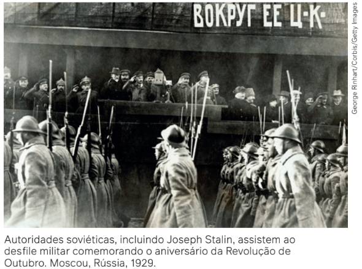
A grande crítica de Trotski ao regime soviético era que esse
revolucionário russo afirmava que os princípios escritos
por Marx, Engels e Lênin jamais foram praticados,
pois a realidade do país era completamente diferente
das ideias originais deles. Para Trotski, o que existia na
URSS era uma ditadura da burocracia do Partido
Comunista. As conquistas econômicas da revolução se
mantinham, o que fez a URSS se tornar uma grande
potência mundial, porém a “democracia operária” fora
destruída pelos burocratas do Partido Comunista.
Outras revoluções seguiram rumos parecidos com os da revolução soviética, ao longo do
século XX: a da China, a do Leste Europeu, a do Vietnã e a de Cuba. Nessa última, podemos
encontrar até mais elementos de democracia. Entretanto, existe um partido único, uma
imprensa única, e não há eleições diretas para o poder central, apesar da grande
popularidade dos líderes revolucionários – Fidel Castro (1926-2016) e Che Guevara (1928-1967),
principalmente – até hoje, mesmo após a morte deles.
De forma contraditória, em nome do socialismo, das ideias de Marx e do comunismo, o
regime soviético reprimiu opositores, assassinou líderes comunistas e desvirtuou a história da
Revolução Russa. Autoritarismos diversos foram realizados contra o povo soviético: falta de
liberdade, partido único, censura, repressão, Estado acima das pessoas. A burguesia dos
países capitalistas se aproveitou disso e denominou de “socialismo real” e “ditadura
comunista” tudo aquilo que ocorria na URSS.
Em resumo, podemos afirmar que o ideal socialista, de acordo com as ideias originais
de Marx, nunca existiu.
Como aprofundaremos adiante, no final da década
de 1980 e começo da década de 1990, começaram
a ocorrer profundas mudanças políticas e econômicas
na URSS e em países do Leste Europeu: caíram os
governos do Partido Comunista e foram feitas reformas
para tornar mais democrático o sistema político,
com eleição direta para os principais cargos. A economia
também passou por profundas alterações, com
a diminuição do controle do Estado, a reativação dos
mecanismos de mercado e com o restabelecimento
da propriedade privada e do capitalismo.
Nesse contexto, surge a ideia, propagandeada
pela burguesia dos países capitalistas, de que o fim
dos regimes políticos da URSS e do Leste Europeu
significaram a falência das ideias marxistas, socialistas
e comunistas como alternativa ao capitalismo, e
que o capitalismo seria o regime econômico definitivo
no futuro da humanidade.
A crise econômica da década de 1970
No início dos anos 1970, o capitalismo viveu mais uma crise, que já apresentara seus
primeiros sinais na década anterior. A recuperação econômica da Europa Ocidental e do Japão,
destruídos pela Segunda Guerra Mundial, havia se completado, o mercado interno estava
saturado e o impulso para criar mercados de exportação para seus excedentes tinha de
começar. Entretanto, a queda da produção e das taxas de lucro influenciou o início de um
problema fiscal nos Estados Unidos que só seria resolvido com a aceleração da inflação.
Cabe aqui uma breve explicação: quando se fala em problema fiscal na economia – uma
linguagem comum nas mídias sociais que tratam do tema –, estamos nos referindo aos gastos
públicos: despesas que o Estado precisa assumir para apresentar políticas em benefício da
população. Para efetuar esses gastos, os governos arrecadam dinheiro, por meio de diversos
impostos e taxas, recolhidos da população e das empresas. O “problema fiscal” surge quando
as despesas começam a crescer, sem acompanhamento equivalente da arrecadação.
O aumento nas taxas de inflação, na maioria dos países europeus, se originou dos
compromissos assumidos pelo chamado Estado de Bem-Estar Social (Welfare State), modelo
adotado por muitos desses países e caracterizado pelo papel do Estado na organização da
economia e na promoção de serviços básicos aos cidadãos. Com isso, buscava-se tanto
conceder aos trabalhadores melhores condições de vida quanto implementar as políticas de
infraestrutura de expansão ao capitalismo.
Diminuindo a produção, o Estado arrecada menos. Arrecadando menos, faz-se necessário
imprimir moedas para manter os compromissos do Estado (programas de assistência,
seguridade social, direitos de pensões, entre outros), gerando a estagflação, que se
configura como estagnação econômica com inflação, isto é, com rápida elevação dos preços.
O que é um mundo globalizado?
Revoluções socialistas
Revoluções socialistas
Revoluções socialistas
Revoluções socialistas
Revoluções socialistas
Revoluções socialistas
Revoluções socialistas
Revoluções socialistas
Revoluções socialistas